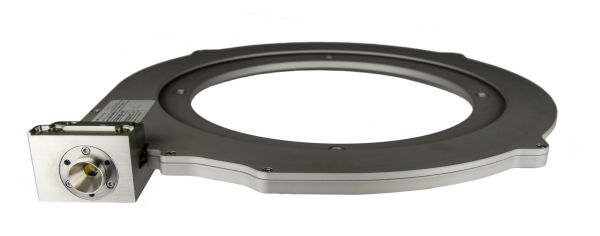

Where to Buy Double-clad Fibers
Definition: optical fibers with different waveguide structures for pump and signal light
See also our encyclopedia article on double-clad fibers!
Related products: fibers, large mode area fibers, fiber optics
Check List for Double-clad Fibers
- What kind of laser-active dopant do you need – Er3+, Yb3+, Nd3+, Tm3+ or anything else?
- Can it be a kind of silica fiber, or do you require some specialty glass, e.g. a fluoride fiber?
- What doping concentration do you need? Alternatively, manufacturers often specify the absorption at some given wavelength(s) – for the core or for the pump cladding.
- What is the fiber's quality? Is the power conversion efficiency reduced by quenching effects and the like?
- What is the effective mode area or mode radius of the fiber core? (There are special large mode area fibers.)
- (For single-mode fibers, the core diameter and numerical aperture are usually not relevant, if the mode area is known.)
- (The propagation losses are usually not very relevant, except if an unusually long length of fiber is used.)
- What is the diameter and numerical aperture of the pump cladding?
- Is the pump cladding circular, elliptical or D-shaped?
- How tight bending is possible, before the bend losses become too high?
- How much optical average power can the fiber tolerate? (Additional properties at the launch end may still occur if too much power gets to the coating.)
- What is the outer fiber diameter with and without protective coating?
- What is the coating material? Is it a standard material which can be removed with a usual fiber stripper?
- Can the fiber be cleaved with a standard fiber cleaver? (Fluoride fibers, for example, have quite different mechanical properties than silica fibers.)
- Are there fiber couplers available for combining pump and signal inputs, or for separate pump and signal at the end?
Also have a look at the check lists for rare-earth-doped fibers and for general fibers.
In case that you need additional advice, consultancy from RP Photonics may be the solution.
10 suppliers for double-clad fibers are listed in the RP Photonics Buyer's Guide. Both manufacturers and distributors can be registered.
| Suppliers with Ad Package | |
|---|---|
| Company | Product Description |
 Blokken 84 3460 Birkerød Denmark Quality: ISO 9000:2015 www.nktphotonics.com Social: Facebook, LinkedIn, Twitter, YouTube Tel.: +45 4348 39 00 Fax: +45 4348 39 01 |  NKT Photonics offers a range of truly single-mode ytterbium-doped double-clad fibers with very large mode area. Our Ytterbium doped double clad fibers offers the largest single-mode cores in the world enabling amplification to unprecedented power levels while keeping mode quality and stability. Packaged in an aeroGAIN gain module, the high performance of our fibers, are easily accessible for building for high-power lasers and amplifiers. Also available with end caps and connectors. See us at Laser World of Photonics China 2019 in Shanghai, March 20–22 (booth W2.2436)! |
| Your products are not listed here? Get an ad package! | |
| All Suppliers | |
|---|---|
| From Asia: | |
Marunouchi Nakadori Bldg. 2–3, Marunouchi 2-chome Chiyodaku, Tokyo 100–8322 Japan | |
27th floor, Bank of East Asia Harbour View Centre 56 Gloucester Road, Wan Chai Hong Kong | |
| Outside Asia: | |
2700, Jean-Perrin, Suite 121 Quebec G2C 1S9 Canada | |
Advanced Technology Innovation Centre Loughborough University Science and Enterprise Parks 5 Oakwood Drive Loughborough LE11 3QF United Kingdom | |
University Parkway Chilworth Science Park Southampton SO16 7QQ United Kingdom | |
34, Rue de la Croix de Fer 78100 Saint Germain-en-Laye France | www.photonics.ixblue.com Tel.: +33 1 30 08 88 88 |
Rue Gabriel Voisin Campus Kerlann 35170 Bruz, Brittany France | |
4631 N. Malden St. Chicago, IL 60640 United States | |
Blokken 84 3460 Birkerød Denmark Quality: ISO 9000:2015 www.nktphotonics.com Social: Facebook, LinkedIn, Twitter, YouTube Tel.: +45 4348 39 00 Fax: +45 4348 39 01 | NKT Photonics offers a range of truly single-mode ytterbium-doped double-clad fibers with very large mode area. Our Ytterbium doped double clad fibers offers the largest single-mode cores in the world enabling amplification to unprecedented power levels while keeping mode quality and stability. Packaged in an aeroGAIN gain module, the high performance of our fibers, are easily accessible for building for high-power lasers and amplifiers. Also available with end caps and connectors. |
7 Airport Park Road East Granby, CT 06026 United States | |
Click on a company entry to mark it. Product entries of suppliers having an ad package are displayed with a logo, product description and product image. | |
Users: if any displayed information is incorrect (e.g., a listed supplier does not offer such products) or legally problematic, please notify RP Photonics so that the problem can be solved.
Suppliers: you can report modified data using a form, which is provided via the button "Edit profile data" on your company profile page. You can obtain ad package for getting a much improved visibility and many more leads.
If you are a supplier and want to be listed, please use the registration form.
An already registered supplier can use a customized form to report the full list of offered photonics products. That form is reachable with a link at the bottom of the supplier's profile page.
Anyone, not only suppliers themselves, can report additional suppliers. If possible, please provide a web address showing that this supplier indeed offers such products.
If you like this buyer's guide, share it with your friends and colleagues, e.g. via social media: